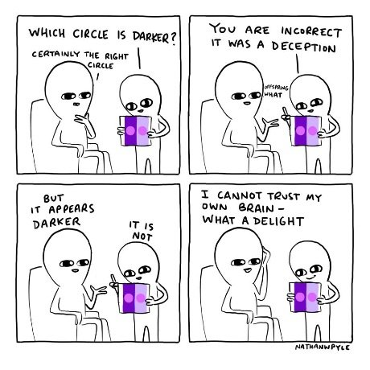

Resistance 2023-06-20T04:00:00+00:00 I see you out there, “resisting” various obligations in your own life. Read More
Seeker's Dream 2023-06-06T04:00:00+00:00 People are obsessed with attaining the enlightenment dream. Read More
Merrily, Merrily, Merrily, Merrily, 2023-04-04T04:00:00+00:00 We're told life is a dream. But it seems so real. Read More
Scary Void 2022-10-25T04:00:00+00:00 Years ago, I had what some call an awakening experience. Read More
Being No Thing 2022-10-04T04:00:00+00:00 What happens to the precious and feels-so-real self exactly, when it’s not a thing? Read More
Reflecting You 2022-09-13T04:00:00+00:00 If you were the last human on earth, would you care if your underwear was folded? Read More
Finding vs Seeking 2022-09-06T04:00:00+00:00 Hoping to catch what your favorite teacher has? Read More
Full Potential 2022-07-26T22:46:16+00:00 It’s a popular reason to hate ourselves, this potential business. Read More
Everyday Life and Consciousness 2022-07-12T04:00:00+00:00 Why does the Mind-Tickler enter through the everyday? Read More
Allowing 2022-04-12T04:00:00+00:00 The instruction to “Allow everything to be as it is” arose. Read More
Uniquely Normal? 2022-03-22T04:00:00+00:00 Everyone feels that there’s something not right about ourselves. Read More
Don't tell me what to do! 2022-02-08T05:00:00+00:00 I used to take the words, “Don’t tell me what to do,” very seriously. Read More
Death of a Child 2022-01-25T05:00:00+00:00 Death is extra hard for parents who lose a child Read More
Consciousness and the brain  2022-01-18T05:00:00+00:00 The brain, the mind, and enlightenment Read More
Questions of Awakening 2022-01-11T05:00:00+00:00 Lots of questions to play with on your own Read More
Personal Experience 2021-12-21T05:00:00+00:00 We're certain that our reality is THE reality. Read More
Past Trauma 2021-09-28T04:00:00+00:00 Most believe that past traumas are stored in us forever. Read More
Motivating your Full Potential 2021-08-17T04:00:00+00:00 The grownups seemed to agree that somewhere my greatness was waiting. Read More
Finding Your Own 2021-07-13T04:00:00+00:00 Many seekers turn to teachers to give them answers Read More
Personal You 2021-06-15T04:00:00+00:00 Thoughts have been around a while. What makes them "yours"? Read More
One Ego Death, Please 2021-05-25T04:00:00+00:00 Many Mind-Ticklers cover the not-grand. Perhaps even the downright ridiculous. Read More
Anxiety, Depression & Anger, oh my! 2021-03-16T04:00:00+00:00 How do we get rid of bad feelings? Read More
What IT BE 2021-02-09T05:00:00+00:00 The pandemic offers spiritual types the opportunity to walk their talk. Read More
Happy Already Day 2021-02-02T05:00:00+00:00 The fascination with what we think we don't have, is endless Read More
New Year's Show 2020-12-29T05:00:00+00:00 You’d think with all these New Year opportunities, we would have improved ourselves by now. Read More
Holiday Gift 2020-12-22T05:00:00+00:00 Enough with the ordinary everyday. Let's get with the enlightenment! Read More
Next Question 2020-12-08T05:00:00+00:00 The stranger asks me a spiritual question. He is about to be disappointed. Read More
Less Than 2020-12-01T05:00:00+00:00 Almost everyone thinks some version of "I'm not good enough." Read More
Not nice! 2020-11-17T05:00:00+00:00 I regularly fail at people’s desire for me to be a sweet Buddha-lady at all times. Read More
Are you embodied? 2020-10-27T04:00:00+00:00 "Sacred cows make the tastiest burgers" - Abbie Hoffman Read More
BEing Productive 2020-10-20T04:00:00+00:00 Humans are required to lead some kind of productive life. Read More
Awaked Up 2020-09-22T04:00:00+00:00 A whole lot of people don’t meet the sleep requirement. Read More
Look, it's you! 2020-09-08T04:00:00+00:00 It seems necessary, required, this “know who I am” business. Read More
Looking for Lightning 2020-07-14T04:00:00+00:00 When inner lightning is accessed at will, they’ll know they’ve arrived. Read More
Spiritual Blah Blah 2020-06-09T04:00:00+00:00 There's a lot going these days. And yet seekers want to talk about the woo, to the exclusion of all else. Read More
Judge This! 2020-05-12T04:00:00+00:00 "I see you’re still dressing for comfort, not style." --My mom Read More
Fill 'er up! 2020-04-21T04:00:00+00:00 In quarantine the sense of deprivation, of not-enough, is strong. Read More
Giving Experience the Bird 2020-03-31T04:00:00+00:00 C’mon, life, give us positivity, smiles, happiness. Read More
Be Afraid 2020-03-24T04:00:00+00:00 There is certainly no lack of cheerleading telling us to not be afraid Read More
Personalities R Us 2020-02-25T05:00:00+00:00 My teacher told my mom I was shy, quiet, and gentle. Who, me? Read More
Integrating Spirituality? 2020-02-18T05:00:00+00:00 See that painting? It could be said that I painted that. But... Read More
So. Much. Effort 2020-02-11T05:00:00+00:00 We work hard at self-improvement. We’re tired. Really, really, tired. Read More
Missing Something? 2020-01-14T05:00:00+00:00 Raise your hand - who’s feeling like something’s missing? Read More
Aging? 2020-01-07T05:00:00+00:00 You’re getting old. Right now. That body is deteriorating as we speak. Read More
Hey I'm Enlightened! 2019-12-03T05:00:00+00:00 I was asked, for the zillionth time, if I’m enlightened.What to say, what to say... Read More
More Enough For You 2019-10-08T04:00:00+00:00 It’s hard to think you’re a person. This person. This You. Read More
Improvement! 2019-10-01T04:00:00+00:00 How pervasive and absolutely everywhere the idea of self improvement is. Read More
Difficult Relationships 2019-09-24T04:00:00+00:00 This weekend I inadvertently pissed off a family member. Read More
You Agree? 2019-08-20T04:00:00+00:00 We need to know our position. Although, what are we, bats? Read More
A Different Doorway 2019-08-06T04:00:00+00:00 Creativity is slippery. So who's in charge of it? Read More
Where's IT At? 2019-07-23T04:00:00+00:00 Only the human species is afflicted with the idea that just being alive is not enough, and requires enlightenment in addition. Read More
Shame 2019-06-18T04:00:00+00:00 Who hasn’t experienced stories like this? No one that’s who. Read More
Going Small 2019-06-11T04:00:00+00:00 There are really only a few reasons why anyone gives a darn about attaining enlightenment. Read More
Spiritual Jargon 2019-06-04T04:00:00+00:00 Today, The Mind-Tickler is brought to you by the Non-Dual Jargon Association. Read More
Silence! 2019-04-30T04:00:00+00:00 Silence is highly esteemed in the non-dual world. And yet so many teachers go on...and on... and on... Read More
People Hurt- 2 2019-04-23T04:00:00+00:00 People suffer. People hurt. I don’t need to tell you this. You’re a people. You know. Read More
Spiritual Idols 2019-04-09T04:00:00+00:00 There’s a whole lotta worshipping going on in our spiritual worlds.Downright idolatry, often. Read More
Space 2019-04-02T04:00:00+00:00 Science: " 99.99% of the human body is completely empty.”Humans: “OK yeah, but what about Meee?” Read More
Enlightenment, Anyone? 2019-03-12T04:00:00+00:00 What’s a non-awake, non-shifted, still-on-the-path person supposed to do? Read More
Scary Future 2019-02-19T05:00:00+00:00 My friend tried so hard to protect herself from the future. And along came “Accident” anyway. Read More
Got News Outrage? 2018-11-13T05:00:00+00:00 The news media has always tried to rile us up. And humans just love a good drama. Read More
Politics and the Dream 2018-10-30T04:00:00+00:00 Nazis, libtards, deplorables! But we're all one and it's all love! Right? Read More
Thinking of You? 2018-10-23T04:00:00+00:00 What real thing needs to be the center of things? Read More
Transformation 2018-10-16T04:00:00+00:00 Different circumstances, different thoughts, better feelings, a little enlightenment. We all want something else. Read More
Lying Liars, Lying 2018-10-02T07:00:00+00:00 We all know that lying is bad and one mustn’t do it. And yet everyone does. Read More
Hands Where We Can See 'Em! 2018-09-11T17:34:41+00:00 The mind can't understand itself. It isn’t big enough for that job. Read More
Noooo, not the Void!! 2018-09-04T07:00:00+00:00 Nothingness. The supposed goal of every enlightenment seeker. Read More
Consciousness and Beauty 2018-08-28T07:00:00+00:00 Consciousness, enlightenment- is it only the good stuff? Read More
No Self? No Way! 2018-08-14T07:00:00+00:00 Ever notice how upset some people get when they hear, “There is no you; there is no self?” Read More
Aha! Got it! 2018-07-25T01:36:28+00:00 When it comes to enlightenment and spiritual stuff, we do love our Aha!s Read More
Fear 2018-07-17T07:00:00+00:00 Fear, anxiety, worry or dread. Whatever it's called, it’s on the increase. Read More
Seeking Conscious Others 2018-07-10T07:00:00+00:00 People who are into enlightenment often feel like they can’t relate to non-enlightened folk. Read More
Want Control? 2018-06-26T07:00:00+00:00 Oh we really want control. Can’t get enough, actually. Read More
Tale of the Tale 2018-06-12T07:00:00+00:00 Stories. We love 'em. Humans narrate life. All the time. Read More
An Inside Job 2018-06-05T07:00:00+00:00 Want enlightenment? It’s not inside. Inner peace? Not in there either. Read More
Out of the Fog 2018-05-15T07:00:00+00:00 How can we snap out of it when we're IN the middle of it? Read More
Drama Drunk 2018-04-17T07:00:00+00:00 We get high on suffering. Maybe not high as in, “Wheee!” but still souped up. Read More
Common Wisdom vs Enlightenment 2018-04-03T07:00:00+00:00 "Whenever you find yourself on the side of the majority,it's time to pause and reflect." --Mark Twain Read More
Enough! 2018-03-20T07:00:00+00:00 So much in life isn’t enough. Love money kids talent success quiet peace safety power. Oh and happiness. Oh and enlightenment. Read More
Normal: Just a Setting On The Blah Blah Blah 2018-03-13T07:00:00+00:00 When it comes to being normal, most folks are very confused. Read More
You Believe THAT? 2018-01-30T08:00:00+00:00 We're obsessed- by point of view, opinion, "Truth." Read More
Weird Non-Duality 2018-01-16T08:00:00+00:00 Non-duality and the spiritual scene is full of mythology. Which causes you to think, "I'm not there yet." Read More
Enlightenment via Pain 2018-01-09T08:00:00+00:00 Pain may be just what helps us see the light Read More
Recipe for the Holidays 2017-12-26T08:00:00+00:00 Here's the recipe for misery that has become an end of year holiday tradition for so many. Read More
The Teacher Myth 2017-12-12T08:00:00+00:00 It's commonly believed that famous spiritual teachers are ego-less and farther along than others. Read More
Does this LIKE Make Me Look Bad? 2017-11-14T08:00:00+00:00 No one goes on social media and feels better. In fact, anyone prone to depression, anxiety or addiction will find that social media makes all that worse. Read More
The Thought Maze 2017-11-07T08:00:00+00:00 It feels as if we get lost in thought, or caught in thought. Like it’s some kind of magical thicket or something. Read More
Eradicating The Self? 2017-10-31T07:00:00+00:00 It’s not like you haven’t tried to wake up from this difficult dream. And yet somehow the sense of self hangs on. Read More
Life's Purpose 2017-10-17T07:00:00+00:00 There’s got to be a purpose for our lives. Some point. Some meaning. Right? Read More
Focus Hocus Pocus 2017-10-10T07:00:00+00:00 Depression and anxiety are the go-to feelings of our time. Read More
Self Meet No Self 2017-09-26T07:00:00+00:00 It does feel like the self is there. It does feel like, “Of course there’s a me!” Read More
The Secret To Suffering? 2017-09-19T07:00:00+00:00 "You-Can-Be-Better!" thinking is everywhere. Read More
What Are You Missing? 2017-08-29T07:00:00+00:00 Something’s missing. Try food, fun, love, money, shopping, meditation... because something has to be done about this. Read More
Happiness? 2017-08-22T07:00:00+00:00 Happiness is our birthright. Every fairy tale says so. So are we asking too much? Read More
You Be You, and I'll Be Me 2017-07-25T07:00:00+00:00 Of course you've noticed how many contradictory versions of awakening there appear to be. Shouldn't there be a Right Way? Read More
Unlovable You 2017-07-04T07:00:00+00:00 People think they are unlovable. This is a wildly common thought. Read More
Got Free Will? 2017-06-27T07:00:00+00:00 People want to know if they have free will. People reeeeeaaalllly want. to. know. Read More
What Hurting Means About You 2017-06-20T07:00:00+00:00 Things are NOT ok as they are, thank you very much, all you weird supposedly-blissed-out spiritual gurus. Read More
The Wow of You 2017-06-06T07:00:00+00:00 Occasionally we turn attention from What is being experienced to Who is experiencing. Read More
Reacting Too Much 2017-05-30T07:00:00+00:00 Reactions happen. As you know. And maybe wish was otherwise. Read More
See Ya Later, Ego 2017-03-28T07:00:00+00:00 This being a person thing …It’s kind of a pain in the ass. Read More
A Little Tale of Blah Blah Blah 2017-03-21T07:00:00+00:00 And then language got ahold of us. Read More
Do Not Have Fun With This 2017-02-21T08:00:00+00:00 This spiritual awakening stuff is vewy vewy serious. Read More
Seeking Love 2017-02-07T08:00:00+00:00 We've been looking for love since forever. Where is it? Is it ever enough? Read More
Bad Person 2017-01-24T08:00:00+00:00 I used to think I was a bad person.Like, Incredible Hulk bad. Read More
What Does This Mean? 2017-01-17T08:00:00+00:00 Kitties don't have to deserve love. So do we? Read More
Story Time 2016-12-13T08:00:00+00:00 Despite humans’ strong sense of disconnection from the whole, consciousness can’t be cut up into pieces. Read More
Chasing The Unicorn 2016-09-27T07:00:00+00:00 See that meme above? See the goal it creates? Read More
Chasing Enlightenment 2016-09-13T07:00:00+00:00 You have had a tantalizing taste of sugar. What person in his right mind wouldn't want to get that back? Read More
Seeking. How Long? 2016-09-06T07:00:00+00:00 So many things to fix and improve. How long does it make sense to keep at it? Read More
Feeling Bad 2016-08-30T07:00:00+00:00 I used to wake every morning with that same heavy feeling of misery and doom. Read More
Things Aren't Going So Great 2016-08-09T07:00:00+00:00 We like things our way, and our way only. Read More
The Money Terror 2016-07-26T07:00:00+00:00 A whole lot of people are scared to death about money. Read More
Enlightenment 1 2016-07-12T07:00:00+00:00 You've read the books, done the inquiries and satsangs. Where's your enlightenment? Read More
I Like This! 2016-06-28T07:00:00+00:00 It doesn’t matter how small or insignificant the subject. We have an opinion about everything. Read More
BE Here Now 2016-05-31T07:00:00+00:00 Most people involved with spirituality want things to be different. Read More
Don't Ever Die 2016-05-17T07:00:00+00:00 Death seems to be the ultimate end of the self story.But what if we have that wrong? Read More
Do You Belong? 2016-05-10T07:00:00+00:00 Oh we do want to belong, don’t we? To be part of, included, to fit in?Yes please. Read More
Specially Bad 2016-04-19T07:00:00+00:00 It is a constant vigil to not let the sad story of unloved self run away with good sense. And everyone has some version of that story. Read More
My Self, My Suffering 2016-04-12T07:00:00+00:00 What real thing needs to convince itself that it is, and what it is, all the time? Read More
But I Don't Waannnnt To 2016-04-05T07:00:00+00:00 There’s a whole lot of stuff not getting done out there. Read More
People Hurt 2016-01-16T08:00:00+00:00 Truly awake people don’t hurt or get triggered, right? Read More
{{ title }} {{#slideshow}} {{/slideshow}} {{^slideshow}} {{/slideshow}} {{#gallery}} {{/gallery}} {{^ gallery }} {{/ gallery }} {{ datetime }} {{{ summary }}} Read More